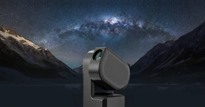

My Seestar S50 Review: A Beginner's Companion
Posted on September 1, 2025
Have you ever looked up at the night sky, wondering what it would be like if you could truly see everything above our own world? What if you could not only see them clearly but also capture beautiful photos of them? Imagine tapping on a galaxy or nebula on your phone and waking up to a stunning picture the next morning.
That's what a smart telescope called the Seestar S50 is said to make possible, and it might make the introduction to astrophotography as simple as it can be. So, what exactly is the Seestar S50? What is it capable of, and is it really worth the price?
What is the Seestar S50?
The Seestar S50 is a $500 all-in-one smart telescope designed to make astrophotography accessible to everyone. Instead of spending thousands on a professional setup with a steep learning curve, you can start with a device that's as simple as turning it on and tapping a few buttons.
The S50 isn’t just a telescope with a camera, it’s a full astrophotography system that handles everything from image stacking to editing right in the app. It includes everything you need to make your night as simple as possible: automated go to and tracking, built-in filters and live stacking, user-friendly app controls, and portability and effortless setup.
Key Features
First, the automated go to and tracking. Without smart telescopes and star trackers, manually aiming your telescope makes finding a deep space object such as a galaxy or nebula much harder. Devices like the Seestar S50 solve this problem. Using your phone's GPS, the telescope finds its location and where everything is in the sky right now. You simply open the app, pick a target from a list like Jupiter or Andromeda Galaxy in the stargazing tab, and tap "Go gazing." The internal motors will automatically move the telescope and point directly at your chosen object. After it finds your target, it must follow it for an extended period of time to get a final image. But, because of the Earth constantly rotating, stars and galaxies spin around and never stay in one place. To get a clear picture of the target, it tracks the movement perfectly, always keeping it centered in the frame.
Next, we have the built-in filters and live stacking. Taking images in a city or any other area with high light pollution can affect your final product, in some cases even making it completely hidden. Luckily, the S50 has a built-in light pollution filter to fix this. It works by blocking the most common wavelengths of light from city streetlights while allowing the light emitted by deep space objects to pass through. This gives you a much clearer, higher contrast image, even in a high light pollution area. Now, in my personal opinion, the best part of the entire telescope. The live stacking. Usually, astrophotography involves taking hundreds of individual photos, then transferring them to a computer to stack them with advanced software. The S50 does this for you in real time. It takes short 10 second exposures and automatically combines them after each one. On your phone, you can watch a faint outline in the sky with scattered stars slowly transform into a vibrant, detailed nebula or galaxy as more images are stacked.
Third, is the user-friendly app. One of the most important parts of a device controlled by your phone is the simplicity. If it’s too confusing and has buttons everywhere, you won’t even know where to start. The only physical button on the telescope is the power button, everything else is controlled directly from your phone. The app connects to your S50 through its own Wi-Fi connection that takes seconds to connect to. The app includes a helpful sky atlas, object database, and even a “tonight's best” suggestion. This allows you to view an interactive map of the night sky and browse through its database of thousands of stars, galaxies, nebulae, and clusters. When you find something you like, just tap on it to learn more or tell the telescope to point at it.
Finally, the portability and effortless setup. The S50 is very lightweight, at only 2.5 kg, making it easy to travel with and setup with no heavy parts or cables all over the place. The entire process of setting it up is quick and simple: take it out of its case, screw in the included tripod, place it on a level surface, turn it on, and connect to the app. It takes less than two minutes to open the case and be ready to image a galaxy. The built-in battery means you aren't required to be near a power outlet, giving you the freedom to take it anywhere you want.
Hardware Specifications
For anyone interested in the hardware, here’s a brief look at the specs of this small telescope:
- Optical Lens (Apochromatic Triplet): High-quality, three-lens system for sharp, true-to-color images without purple halos.
- Aperture & Focal Ratio (50 mm, f/5): 50mm aperture and fast f/5 focal ratio offer a wide field of view, ideal for large targets like the Andromeda Galaxy.
- Sensor (Sony IMX462): Sensitive Sony sensor captures faint objects and produces clean, low-noise images.
- Net Weight (2.5 kg / 5.5 lbs): Extremely light at 2.5 kg for easy portability.
- Storage & Battery (64 GB, 6000 mAh): 64 GB storage and long-lasting battery eliminate the need for extra cables or power banks for stargazing.
Things to Consider
Of course, there are some trade-offs to consider. While I personally think the Seestar S50 is an amazing piece of technology, no product can be “perfect” for everyone. Here are some things to keep in mind before you get your own S50:
- It’s for photography: There is no eyepiece, as it is not for viewing but taking images. You can technically see its view on your phone, but if you want to look at the sky and don’t want to take images, I recommend a traditional telescope.
- It requires the mobile app: Without the app on a smartphone or tablet to control the telescope won’t function. You must have a compatible device to connect (Most smartphones and tablets should work fine).
- Not ideal for planets: The S50 is great for deep space imaging of nebulae and galaxies. However, it's not designed for high quality views of planets. While you can see Jupiter's moons or Saturn's rings, the planets themselves will appear quite small and in low detail.
- Expectations: You’re spending $500 on a hobby that usually costs thousands. Don’t get me wrong, it is very good for its price, but cannot compete with high end astrophotography setups that require hours of manual setup and processing.
Final Verdict: Is it Worth It?
So, is the Seestar S50 really worth the price? After looking at its features, the answer is a yes, for the right person. It completely simplifies the introduction to astrophotography, with its automated tracking, live stacking, and user-friendly app control in a single device that anyone can set up in minutes.
The Seestar S50 is the perfect option for beginners, casual observers who don't want to spend thousands, and travelers looking for something portable. It's designed for anyone who wants to photograph the night sky but has been deterred by the cost and complexity of traditional astrophotography.
It definitely does not replace a professional setup for experts, but it was never meant to. The Seestar S50 is an introduction. It opens up a view of the universe that was previously for those with a large budget and years of experience.
Have you used the Seestar S50, or are you thinking about getting one?
Clear Skies,
- Rowan